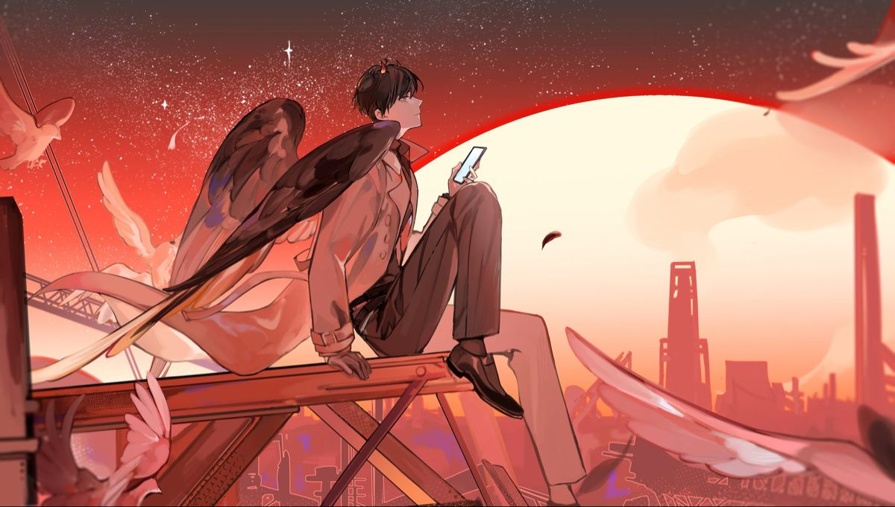
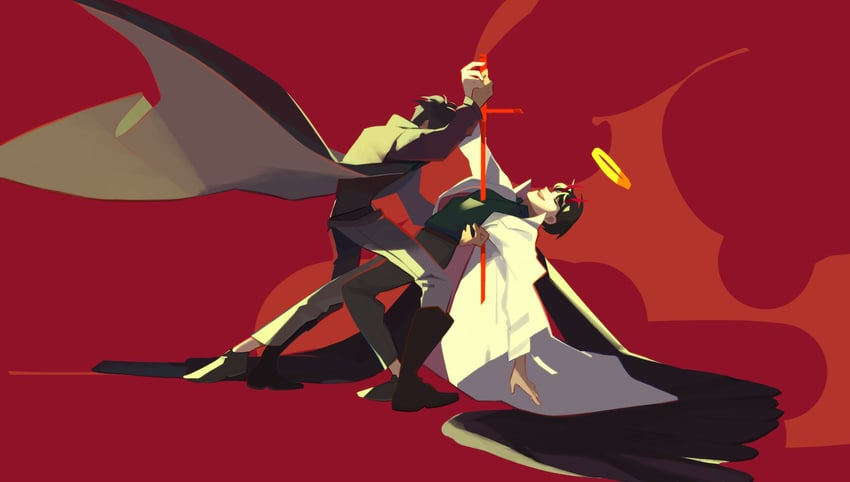

Overview
A novel called Three Ways to Survive in a Ruined World (written by the anonymous author tls123) has been written and published over the course of a decade, and Kim Dokja is the sole reader who has followed it to its ending. When the real world is plunged into the premise of Ways of Survival, Kim Dokja's unique knowledge of the novel becomes vital to his survival. Kim Dokja allies with Yoo Joonghyuk, the protagonist of Ways of Survival, in order to change the novel's original plot and more quickly approach the end of the story. As Kim Dokja and his party members progress through the scenarios, they face increasingly difficult threats and life-or-death challenges, struggling to stay alive and work together as they aim to destroy the that demands their suffering

History
Kim Dokja is the lone reader of "Ways of Survival," a webnovel. It's because the novel's characters became sources of solace for Kim Dokja as he fought through his tragic circumstances. Kim Dokja experiences a string of misfortunes, including failing his CSAT and enrolling in a third-rate university, serving on the front lines during his military service, and receiving a low-paying job at Minosoft. Throughout it all, he reads the webnovel's daily updates, commenting on each chapter and encouraging the author while making his own suggestions. With this, Kim Dokja continued his life as if the webnovel was the sole reason for him to live, but as the novel nears its conclusion, fiction collides with reality.

Credits
Author: Sing Shong
Hangul: 전지적 독자 시점
Length: 551 chapters
Publisher(s):
Webnovel (English webnovel)
Munpia (Korean webnovel)
Naver Webtoon (Korean webtoon)
LINE Webtoon (English webtoon)
Munpia (Korean ebook)
Naver Series (Korean ebook)